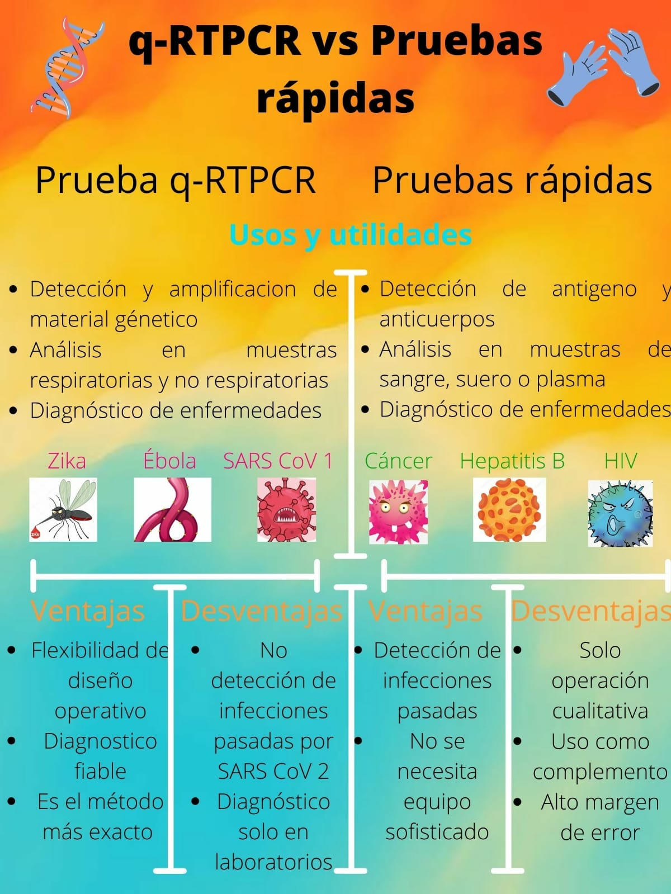
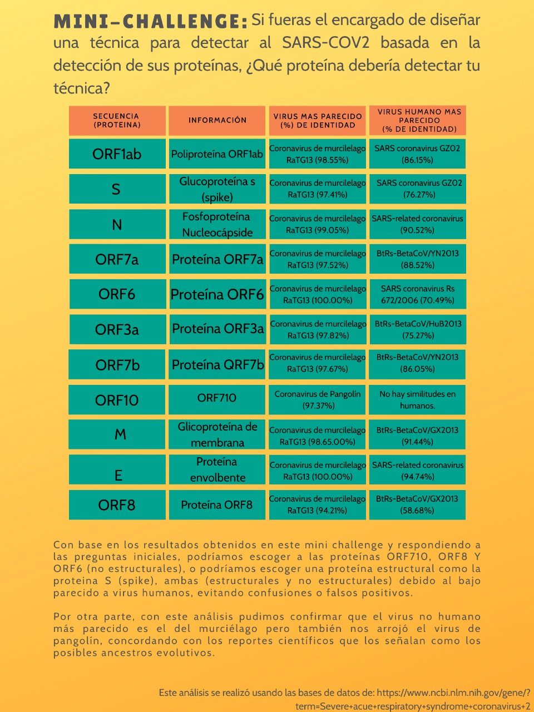

ARS-CoV-2 un tipo de coronavirus parte de una extensa familia de virus que pueden causar enfermedades tanto en animales como en humanos. En los humanos, se sabe que varios coronavirus causan infecciones respiratorias que pueden ir desde el resfriado común hasta enfermedades más graves como el síndrome respiratorio de Oriente Medio (MERS) y el síndrome respiratorio agudo severo (SRAS). El coronavirus SARS-Cov-2 que se ha descubierto más recientemente causa la enfermedad por coronavirus COVID-19.
¿Qué es COVID-19?
COVID‑19 es la enfermedad infecciosa causada por el coronavirus que se ha descubierto más recientemente. Tanto este nuevo virus como la enfermedad que provoca eran desconocidos antes de que estallara el brote en Wuhan (China) en diciembre de 2019. Actualmente la COVID‑19 es una pandemia que afecta a muchos países de todo el mundo.
¿Por qué es importante realizar un diagnóstico?
El diagnóstico microbiológico del SARS-CoV-2, agente de COVID-19 (enfermedad por el nuevo coronavirus de 2019) es importante tanto para el manejo de la enfermedad individual como de la actual pandemia. Si bien el procedimiento de elección es la PCR, también es necesario disponer de pruebas rápidas, simples e idealmente con alta sensibilidad y precisión y que se puedan realizar a gran escala. El objetivo es un diagnóstico precoz, para un mejor manejo (aislamiento y tratamiento si es necesario) y monitorización de los pacientes, la aplicación de medidas de prevención y control de la expansión y la vigilancia epidemiológica.
Metodos de diagnostico
"haz click para mas incormación"
PCR
"haz click para mas incormación"
PRUEBA RAPIDA
Comparacion

MINI CHALLENGE

Para mas informacion te recomendamos el sitio de nuestros compañeros
Bibliografia
Laboratory testing for 2019 novel coronavirus (2019-nCoV) in suspected human cases. Interim guidance. 19 March 2020. https://www.who.int/publications-detail/laboratorytesting-for-2019-novel-coronavirus-in-suspected-human-cases-20200117.
World Health Organization (2020) Novel Coronavirus (2019-nCoV) technical guidance: Laboratory testing for 2019-nCoV in humans. 31 Jan 2020. Disponible en: https://www.who.int/emergencies/diseases/novel-coronavirus2019/technicalguidance/laboratory-guidance.
SEIMC. Reflexiones de SEIMC sobre el uso de la detección de antígenos y anticuerpos para diagnóstico de COVID-19. 30 marzo 2020. Disponible en:
https://seimc.org/contenidos/noticias/2020/seimc-nt-2020-
Reflexiones_deteccion_Ag_y_AC_COVID-19.pdf
Sociedad Española de Inmunología. Utilidad de la determinación de anticuerpos anti SARS-CoV-2. Propuesta de implementación como prueba diagnóstica, pronóstica y de desarrollo de inmunidad protectora. 2 abril 2020.
Assay Techniques and Test Development for COVID-19 Diagnosis
Linda J. Carter, Linda V. Garner, Jeffrey W. Smoot, Yingzhu Li, Qiongqiong Zhou, Catherine J. Saveson, Janet M. Sasso, Anne C. Gregg, Divya J. Soares, Tiffany R. Beskid, Susan R. Jervey, and Cynthia Liu
ACS Central Science 2020 6 (5), 591-605
DOI: 10.1021/acscentsci.0c00501